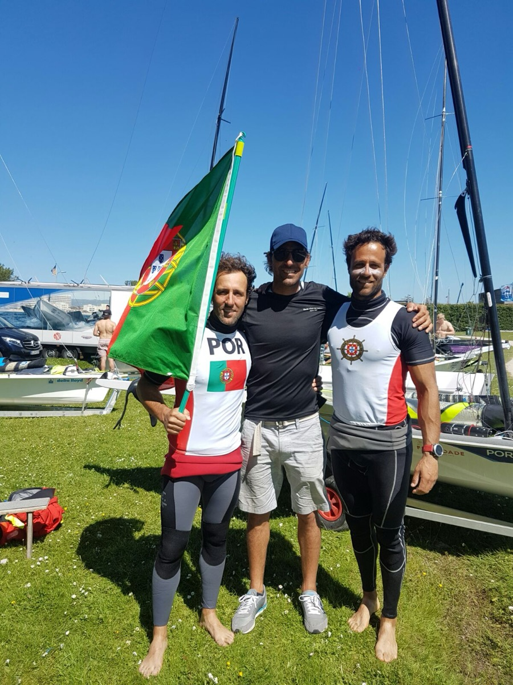
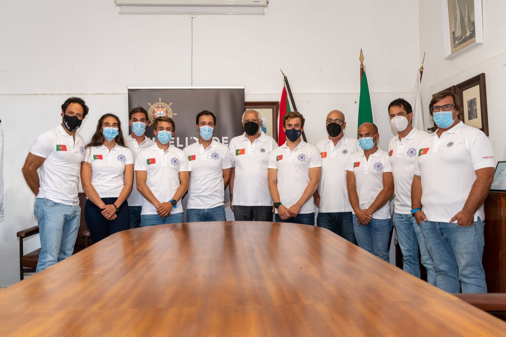
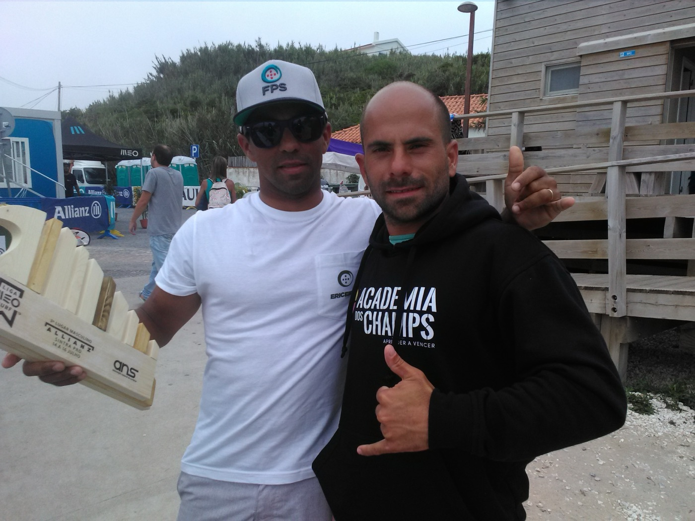
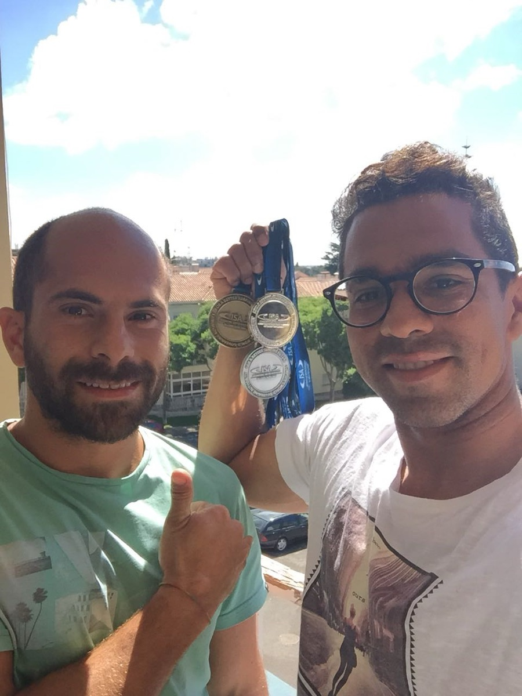

Três ciclos Olímpicos na Vela e um percurso de referência no Surf nacional e internacional, Padel e outras modalidades.
Responsável pela avaliação, planeamento, implementação e controlo do treino físico de atletas de alto rendimento, em articulação com treinadores, fisioterapeutas e restantes elementos da equipa multidisciplinar — em três ciclos olímpicos consecutivos.


Percurso de referência no Surf nacional e internacional, com atletas campeões nacionais, europeus e mundiais de júnior — e trabalho multidisciplinar em Padel, Ténis e Freediving.


Vamos falar sobre os objetivos da próxima época.